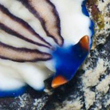

|
|
| flatworms text index | photo index |
| worms > Phylum Platyhelminthes > Class Turbellaria > Order Polycladida |
| Ocher-striped
flatworm Pseudoceros rubrotentaculatus Family Pseudocerotidae updated Feb 2020 Where seen? This small white flatworm with three stripes and red tipped pseudotentacles is sometimes seen on many of our shores, on coral rubble near living reefs. Features: 2-4cm long. Body creamy-white with a blue margin. It has three non-connecting lines along the centre of the body, each line ocher bordered dark brown or purplish brown. There is a pair of pseudotentacles made up of simple folded edges of the body, with orange tips. Sometimes mistaken for similar flatworms. Here's more on how to tell apart small flatworms with one central line and three central lines. |
 Pseudotentacles with orange tips. |
 Sisters Island, Jan 06 |
*Species are difficult to positively identify without close examination.
On this website, they are grouped by external features for convenience of display.
| Ocher-striped flatworms on Singapore shores |
On wildsingapore
flickr
|
| Other sightings on Singapore shores |

| Acknowledgement With grateful thanks to Leslie H. Harris of the Natural History Museum of Los Angeles County for comments on this worm and its identification. Grateful thanks to Rene Ong for sharing details and identifying the flatworms on this page. References
|